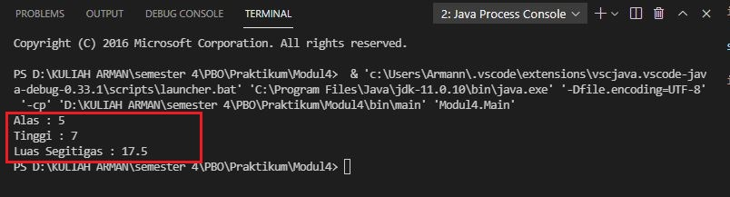

Belajar Java OOP: Pengenalan Class, Object dan Enkapsulasi

Untuk dapat membuat program yang sesuai dengan penerapan di kehidupan sehari-hari, OOP adalah jalan keluarnya.
Jika biasanya developer merangkai kode berdasarkan function dan logic, dengan OOP developer dapat mengembangkan software yang terbagi dalam objek-objek tertentu.
Objek-objek yang saling berkaitan dan disusun kedalam satu kelompok ini disebut dengan class.
Nantinya, objek-objek tersebut akan saling berinteraksi untuk menyelesaikan masalah program yang rumit.
Jika sebelumnya developer harus berfokus pada logic yang akan dimanipulasi, dengan OOP, developer dapat lebih terfokus pada objeknya saja untuk dimanipulasi.
Berikut pengertion Class, Object dan Enkapsulasi:
Class dan Object
Class merupakan cetak biru (blue print) dari objek atau dengan kata lain sebuah Class menggambarkan ciri-ciri objek secara umum.
Class sebenarnya bertugas untuk mengumpulkan prosedur/fungsi dan variable dalam satu tempat
Contoh :
Kita ingin membuat game sederhana, di dalamya ada kucing dan makanan.
Dengan class, kita bisa menentukan mana variable dan prosedur untuk kucing dan makanan.
Didalam class ini akan kita pakai untuk membuat objek.
Jadi class berisi definisi variable dan fungsi yang menggambarkan sebuah objek.
Dalam OOP :
- Variabel disebut atribut atau properti;
- Fungsi disebut method.
- Class JOptionPane;
Contoh Class:
class NamaClass {
String atribut1;
String atribut2;
void NamaMethod (){...}
void NamaMethodLain (){...}
}
Lalu, kita biasanya membuat objek seperti ini:
NamaClass namaObj = new NamaClass(); Kata kunci new berfungsi untuk membuat objek baru dari class tertentu.
Setelah membuat objek, kita bisa mengakses atribut dan method dari objek tersebut.
Contoh:
namaObj.namaMethod();
namaObj.atribut1;Tanda titik(.) berfungsi untuk mengakses atribbut dan method.
Enkapsulasi
Enkapsulasi (encapsulation) merupakan cara untuk melindungi property (atribut) / method tertentu dari sebuah kelas agar tidak sembarangan diakses dan dimodifikasi oleh suatu bagian program.
Cara untuk melindungi data yaitu dengan menggunakan access modifiers (hak akses).
Ada 4 hak akses yang tersedia, yaitu default, public, protected, private.
Untuk lebih jelasnya, silahkan lihat table berikut :
| No | Modifier | Pada class | Pada method dan variable |
|---|---|---|---|
| 1 | Default (tidak ada modifier). | Dapat diakses oleh yang sepaket. | Diwarisi oleh subkelas sepaket yang sama, dapat diakses oleh method-method yang sepaket. |
| 2 | Public | Dapat diakses dimanapun | Diwarisi oleh subkelasnya dan dapat diakses dimanapun. |
| 3 | protected | Tidak bisa diterapkan | Diwarisi oleh subkelasnya, dan dapat diakses oleh method-method yang sepaket. |
| 4 | Private | Tidak bisa diterapkan | Tidak dapat diakses dimanapun kecuali oleh method-method yang ada didalam kelas itu sendiri. |
| Aksesabilitas | Public | Private | Protected | Default |
|---|---|---|---|---|
| Dari kelas yang sama | Ya | Ya | Ya | Ya |
| Dari sembarang kelas dalam paket yang sama | Ya | Tidak | Ya | Ya |
| Dari sembarang kelas diluar paket | Ya | Tidak | Tidak | Tidak |
| Dari subkelas dalam paket yang sama | Ya | Tidak | Ya | Ya |
| Dari subkelas diluar paket | Ya | Tidak | Ya | Tidak |
Contoh :
Kita akan membuat program perhitungan luas alas segitiga sederhana.
Buatlah project java baru dan buat file bernama Enkapsulasi.java
public class Enkapsulasi {
// deklarasi variable atribut
private int alas,tinggi;
private double luasSegitiga;
// membuat method
public int getAlas() {
return alas;
}
public void setAlas(int alas ) {
this.alas = alas;
}
public int getTinggi() {
return tinggi;
}
public void setTinggi(int tinggi ) {
this.tinggi = tinggi;
}
public int getLuasSegitiga() {
return luasSegitiga;
}
public void setLuasSegitiga(int alas, int tinggi ) {
luasSegitiga = 0.5 * (double)(alas*tinggi);
}
Selanjutnya buat Main filenya dengan nama Main.java
public class Main {
public static void main(String[] args) {
// buat object enkapsulasi
Enkapsulasi ob = new Enkapsulasi();
// akses method dari enkapsulasi
// memasukkan data kedalam method enkapsulasi
ob.setAlas(5);
ob.setTinggi(7);
// memanggil method untuk menampilkan data
System.out.println("Alas : "+ ob.getAlas());
System.out.println("Tinggi : "+ ob.getTinggi());
ob.setLuasSegitiga(ob.getAlas(), ob.getTinggi());
System.out.println("Luas Segitiga : "+ ob.getLuasSegitiga());
}
}
Output :
Penjelasan :
Perhatikan method Enkapsulasi.java, terdapat method yaitu getAlas() dan setAlas().
- Pada method getAlas() program akan mengembalikan nilai data variabel alas untuk dijadikan output.
- Sedangkan method setAlas() program akan meminta value atau nilai alas. Selanjutnya program akan memasukkan nilai tersebut kedalam variable alas dengan menggunakan kode this.
Pada file Main.java kita hanya perlu membuat objek dari file Enkapsulasi.java. Selanjutnya kita hanya perlu memanggil method-method yang ada didalamya.
Akhir Kata...
Buat yang baru pertama belajar OOP, mungkin akan merasa kesulitan. Karena banyak hal baru yang belum dipahami.
Namun tenang saja…
Itu adalah proses belajar.
Silahkan banyak-banyak latihan dan pahami hakikat dari class, atribut, method dan enkapsulasi.
Selamat belajar.